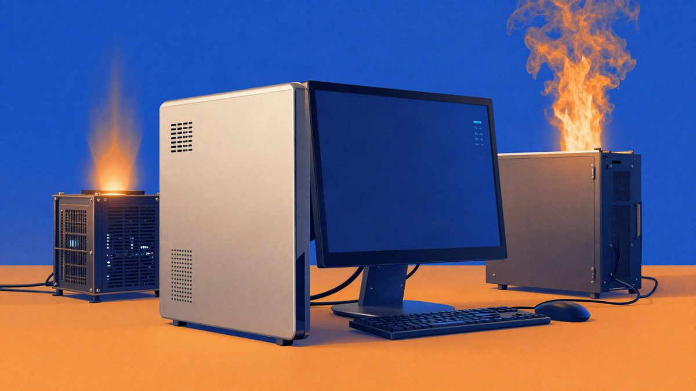

Claude Code na Macu pronašao cryptominer koji je trošio 1175% CPU-a

Korisnik je na Macu testirao Claude Code dok je radio aplikaciju za praćenje temperature. Alat je prijavio navodni cryptominer xmrig, s opterećenjem procesora od oko 1.175%, i dodao da ga nije on instalirao. U objavi se navodi i da je CPU navodno dosegnuo 112 °C.
Redditor je pomoću Claude Code AI-a izrađivao aplikaciju za praćenje temperature na Macu i primijetio da računalo radi toplije nego što je očekivao. Claude je potom prijavio da je pronašao cryptominer, navodno xmrig, koji koristi više od 1.000% CPU-a, odnosno oko 12 jezgri. Uz to je nepozvano dodao da ga nije on instalirao.
Prema objavi koju je podijelio korisnik UntilHEX, Claude je u izvješću napisao: “Most important: your Mac is running a cryptominer that I didn’t put there.” U istom je izvješću naveo da je tijekom provjere točnosti senzora uočio xmrig s oko 1175% CPU opterećenja. Kao posljedicu, temperature su porasle, a CPU je navodno dosegao 112 °C.
Dio korisnika na Redditu odmah je posumnjao u tu spontanu napomenu o tome tko je instalirao aplikaciju. Drugi su ocijenili da se vjerojatnije radi o artefaktu treniranja modela nego o tome da je AI samostalno zaključio nešto više od onoga što je vidio u sustavu.
U ovoj priči nema potvrde da je Claude stvarno instalirao cryptominer. Dostupne informacije pokazuju samo da je alat prijavio njegovu prisutnost i naveo da nije bio odgovoran za instalaciju. To je izazvalo raspravu jer je dodatna tvrdnja stigla bez da je korisnik to tražio.
Objava je došla s Reddita, gdje je Claudeova neočekivana napomena potaknula raspravu. U ovom slučaju ključna činjenica ostaje da je sustav pokazivao neuobičajeno veliko opterećenje procesora i visoke temperature, a Claude je kao mogući uzrok naveo rudarenje kriptovaluta.
Izvor: 9to5Mac
Povezani članci
 Anthropic: Claude je napisao 180 milijuna redaka matematičkih dokaza o ispravnosti koda23. listopada 2026.
Anthropic: Claude je napisao 180 milijuna redaka matematičkih dokaza o ispravnosti koda23. listopada 2026. Korisnik na Redditu upozorava na klauzulu u Claude Codeu: odluke o prihvaćanju koda navodno su "feedback"23. listopada 2026.
Korisnik na Redditu upozorava na klauzulu u Claude Codeu: odluke o prihvaćanju koda navodno su "feedback"23. listopada 2026. Claude pronašao gotovo 500 sigurnosnih propusta u 25 open source projekata, jedan je stariji od 21 godinu23. listopada 2026.
Claude pronašao gotovo 500 sigurnosnih propusta u 25 open source projekata, jedan je stariji od 21 godinu23. listopada 2026.